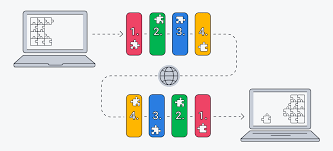

¿Qué pasó en estos años?

💼 1980: Era de Negocios en la Informática
En la década de 1980, las computadoras comenzaron a jugar un papel crucial en el mundo empresarial, marcando la transición a una herramienta clave para la gestión empresarial.
📊 Aplicaciones empresariales clave
- Contabilidad: Software como Lotus 1-2-3 (1983) automatizó hojas de cálculo, mejorando la eficiencia financiera.
- Inventarios: Sistemas de Punto de Venta (POS) integraron ventas, inventario y reportes financieros.
- Gestión empresarial: Los primeros ERP permitieron gestionar recursos, personal y operaciones.
💰 Accesibilidad de la tecnología empresarial
Al principio, las computadoras eran costosas y solo accesibles para grandes corporaciones, pero con la llegada de las PCs, la tecnología se volvió más accesible para pequeñas y medianas empresas.
🌐 1982: Desarrollo de los protocolos TCP/IP
TCP/IP permitió la creación de redes locales (LAN) en oficinas, mejorando la colaboración y el comercio electrónico emergente.
📈 Transformación del negocio con la informática
Las corporaciones optimizaron operaciones, surgieron nuevos modelos de negocio y se sentaron las bases para la explosión tecnológica de los años 90.